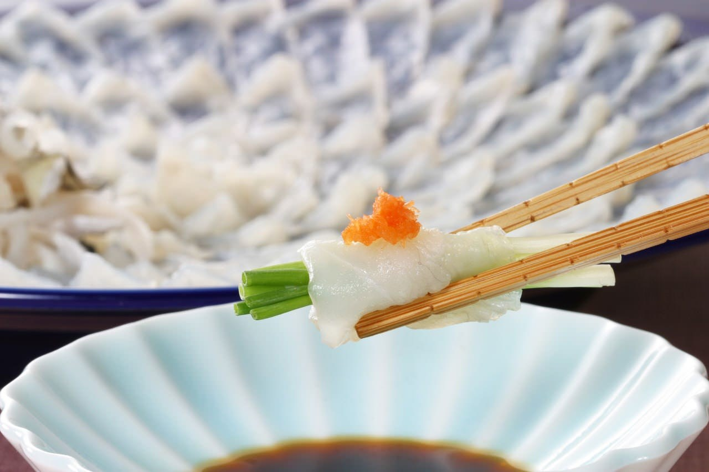
| 営業時間 | 昼 11:00〜15:00（L.O. 14:00）／夜 17:30〜21:00（L.O. 20:00）※ホットペッパーは夜を17:00〜22:00と記載しており食い違う。公式サイトの記載を採った |
|---|---|
| 定休日 | 水曜（水曜が祝日の場合は翌日）・大晦日・元旦 |
| 住所 | 山口県下関市唐戸町3-10 |
| 予約 | 可（電話 083-228-2452、または公式サイトの WEB 予約。懐石料理は3日前まで、夏ふくコースは5日前までの要予約） — ☎ 083-228-2452 ／ 公式サイト |
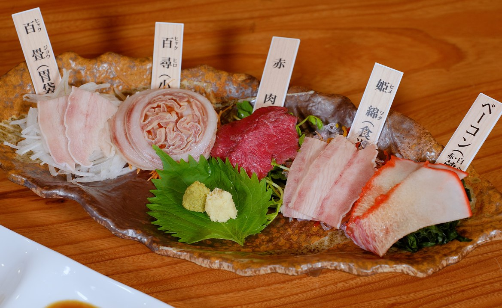
| 営業時間 | 夜 17:30〜22:00（L.O. 21:00）／昼 11:00〜14:00（L.O. 13:30）※昼は平日の営業なし（土日祝のみ）、日曜は夜の営業なし |
|---|---|
| 定休日 | 日曜 |
| 住所 | 山口県下関市中之町6-3 第2松栄ビル1階 |
| 予約 | 可（電話 083-242-0444・受付9:00〜17:00、または公式サイトとホットペッパーの WEB 予約） — ☎ 083-242-0444 ／ 公式サイト |
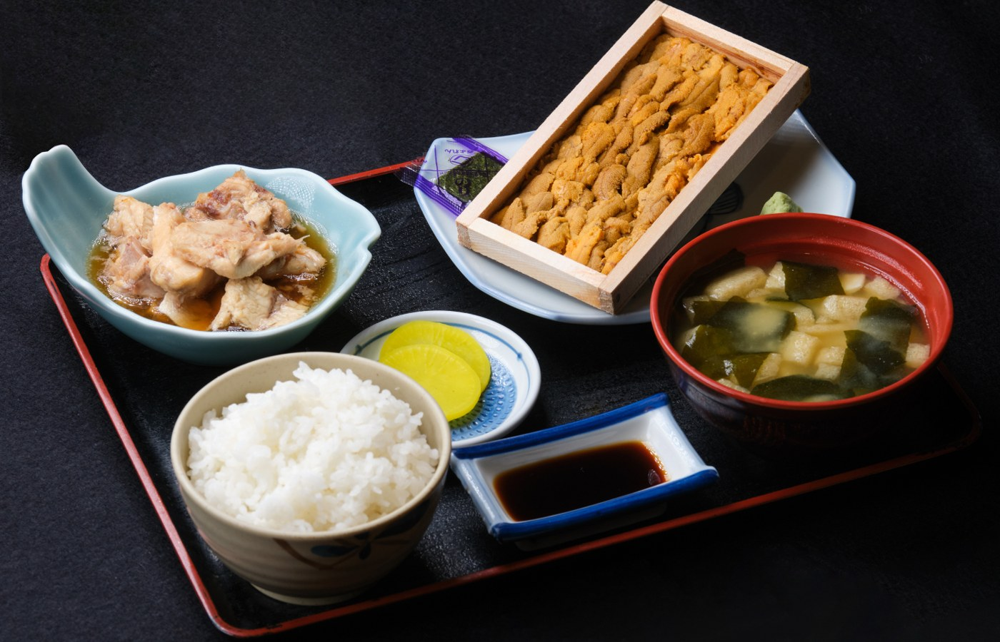
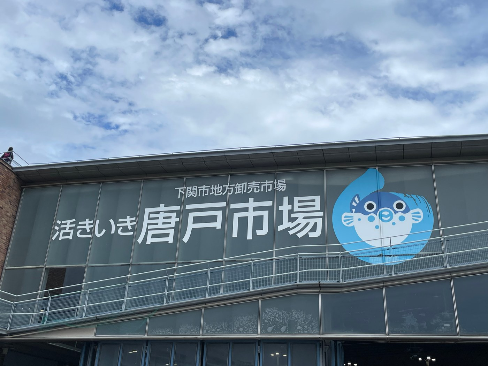
| 営業時間 | 月〜土 6:00〜14:00（L.O. 13:00）／日・祝 8:00〜14:00（L.O. 13:00） |
|---|---|
| 定休日 | 火曜・水曜（祝日の場合は営業）※不定休あり |
| 住所 | 山口県下関市唐戸町5-50 唐戸市場2階 |
| 予約 | 不可（席は先着順。電話 083-232-4069 は問い合わせ用） — ☎ 083-232-4069 ／ 公式サイト |
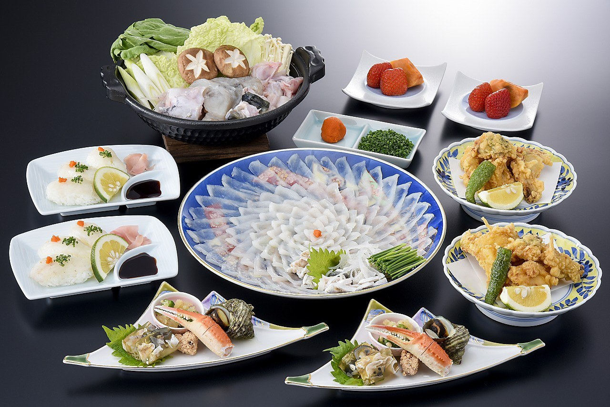
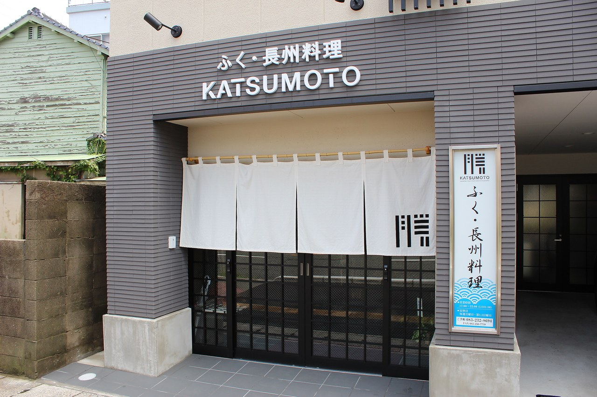
| 営業時間 | 昼 11:30〜14:00（L.O. 13:30）※土・日曜の昼は予約制／夕 17:00〜22:00（料理L.O. 21:00） |
|---|---|
| 定休日 | 月曜 |
| 住所 | 山口県下関市田中町8-11 |
| 予約 | 可（電話 083-232-8694、またはホットペッパーのネット予約。とらふくフルコース等は前日までの要予約・2人前から。土日祝の昼は完全予約制） — ☎ 083-232-8694 ／ 公式サイト |
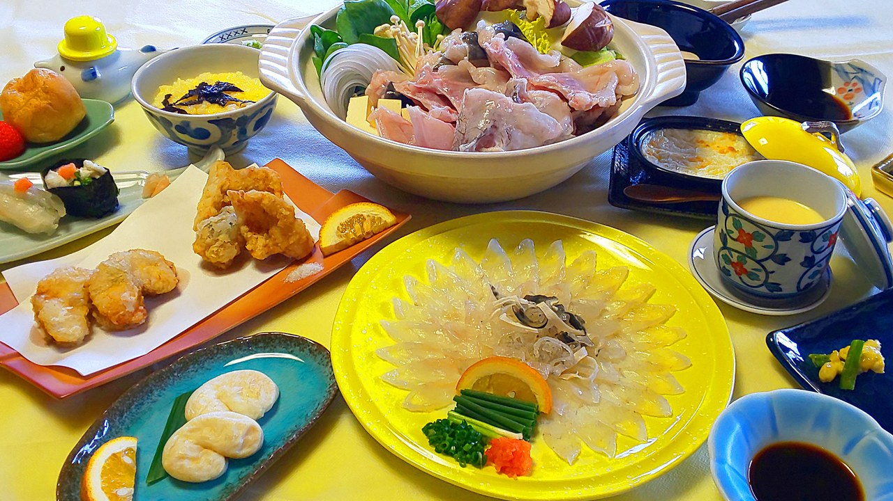
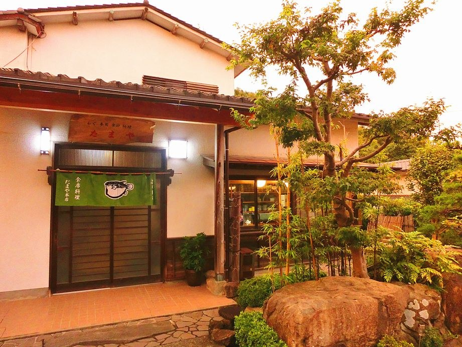
| 営業時間 | 11:30〜21:30（予約の最終受付19:30、ドリンクL.O. 21:00） |
|---|---|
| 定休日 | 水曜（不定休あり）・年末年始 |
| 住所 | 山口県下関市彦島老町2丁目5番9号 |
| 予約 | 完全予約制（来店の2日前まで。電話 083-267-7804、公式サイトの予約フォーム、またはホットペッパーのネット予約。キャンセルは3日前まで） — ☎ 083-267-7804 ／ 公式サイト |
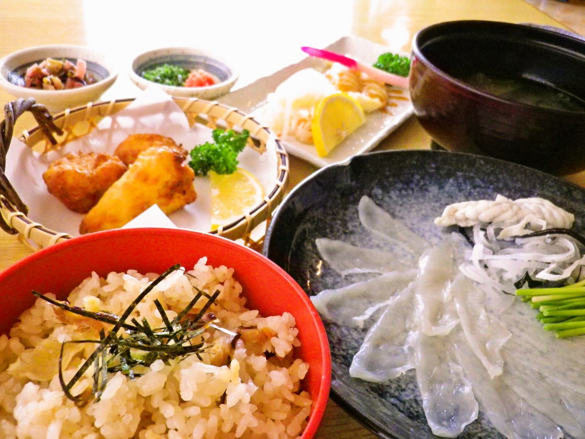
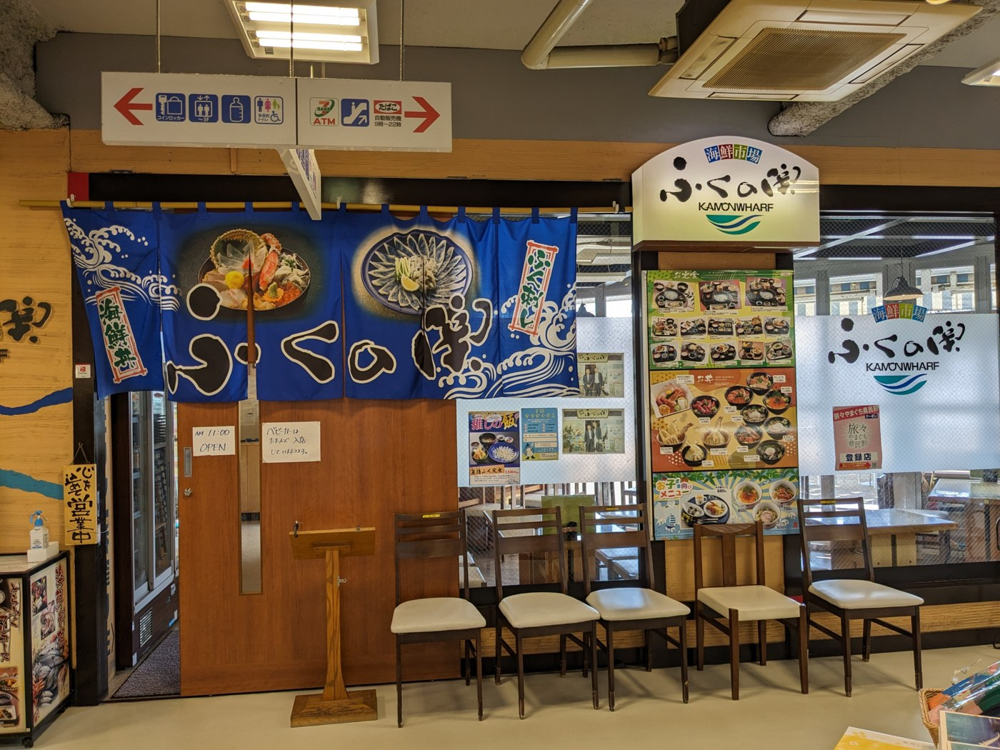
| 営業時間 | 11:00〜21:00（O.S. 20:00）※施設カモンワーフ側の店舗紹介ページは 11:00〜16:00（O.S.15:00）／17:00〜20:00（O.S.19:00）と短い時間を載せており食い違う。店の公式サイトの記載を採った（カモンワーフのサイトは当方の実行環境から接続できず、検索結果の要約で確認） |
|---|---|
| 定休日 | 年中無休 |
| 住所 | 山口県下関市唐戸町6-1 カモンワーフ1階（海側） |
| 予約 | 不要（席は先着順。団体は電話 083-234-2981 で相談。ホットペッパーのネット予約もあり） — ☎ 083-234-2981 ／ 公式サイト |
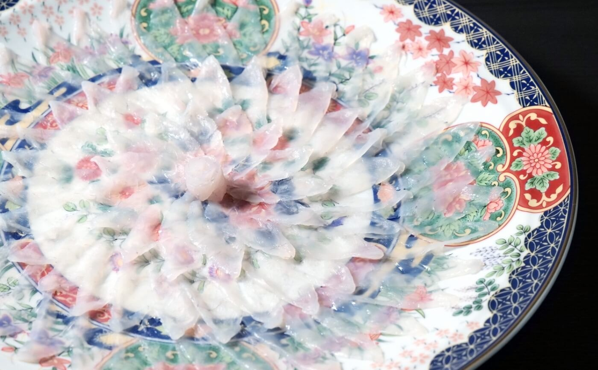
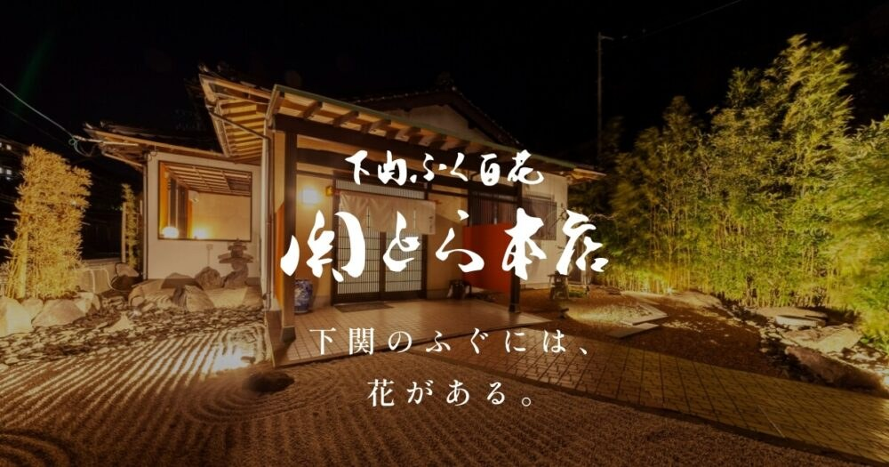
| 営業時間 | 17:30〜22:00（料理L.O. 21:30・ドリンクL.O. 21:30）※公式サイトは「17時〜22時」と幅を大きく書いており食い違う。予約の電話受付は17:00〜22:00 |
|---|---|
| 定休日 | 日曜 |
| 住所 | 山口県下関市みもすそ川町6-20（関門橋横） |
| 予約 | 完全予約制（4日前までに。電話 083-227-4431・受付17:00〜22:00、公式サイトの WEB 予約、またはホットペッパーのネット予約） — ☎ 083-227-4431 ／ 公式サイト |
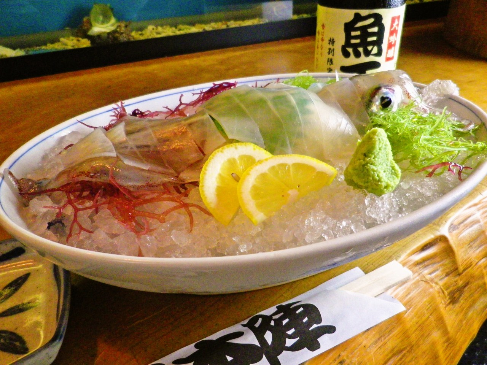
| 営業時間 | 17:00〜23:00（料理L.O. 22:30・ドリンクL.O. 22:30） |
|---|---|
| 定休日 | 月曜（祝日・祝前日は営業）※下関観光コンベンション協会の掲載は定休日を12月30日・31日・1月1日だけとしており食い違う。公式インスタグラムとホットペッパーが一致する「月曜定休」を採った |
| 住所 | 山口県下関市赤間町4-20 |
| 予約 | 可（電話 083-234-0732、またはホットペッパー・楽天ぐるなびのネット予約。コースによっては3日前までの予約が要る） — ☎ 083-234-0732 ／ 公式サイト |
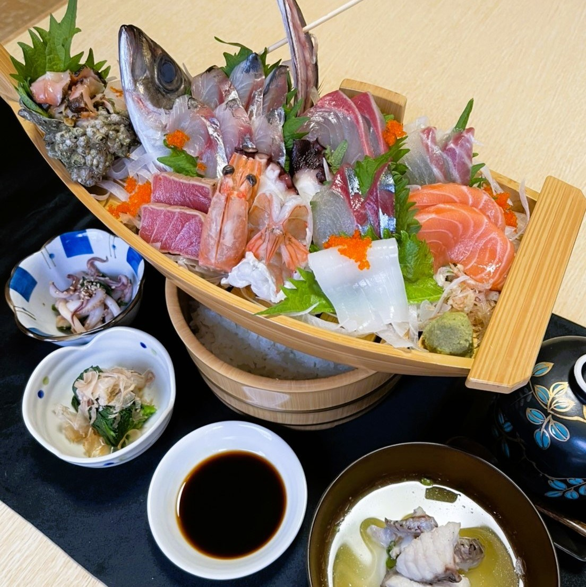
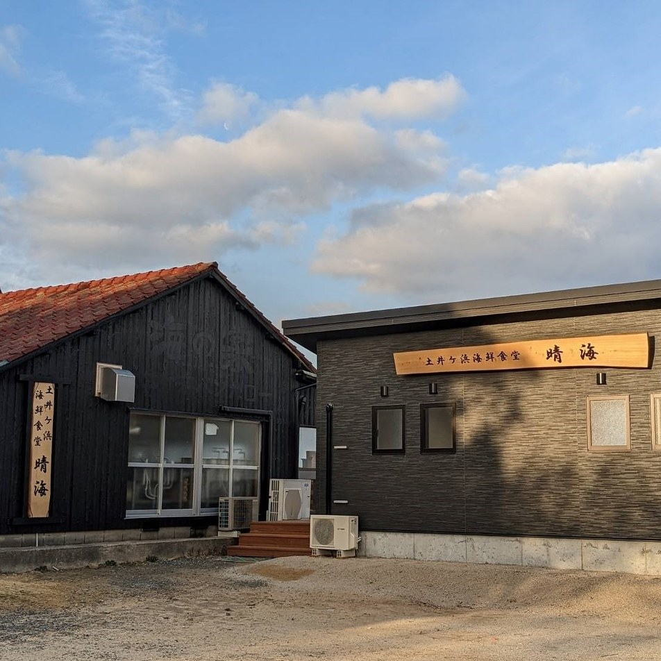
| 営業時間 | 11:00〜15:00（料理L.O. 14:30・ドリンクL.O. 14:30）※食材が無くなり次第、時間内でも閉店することがある。食べログ・ヒトサラは10:30〜16:00（L.O.15:30）と記載しており食い違うため、ホットペッパーと公式インスタグラムの記載が一致する11:00〜15:00を採った |
|---|---|
| 定休日 | 水曜・木曜（大雪・台風等で営業が難しい日は臨時休業） |
| 住所 | 山口県下関市豊北町神田上787 |
| 予約 | 可だが席数に限りあり（電話 083-242-1645。団体は要相談）。公式サイトは無く、店の情報発信はインスタグラム @kaisenshokudou_harumi — ☎ 083-242-1645 |
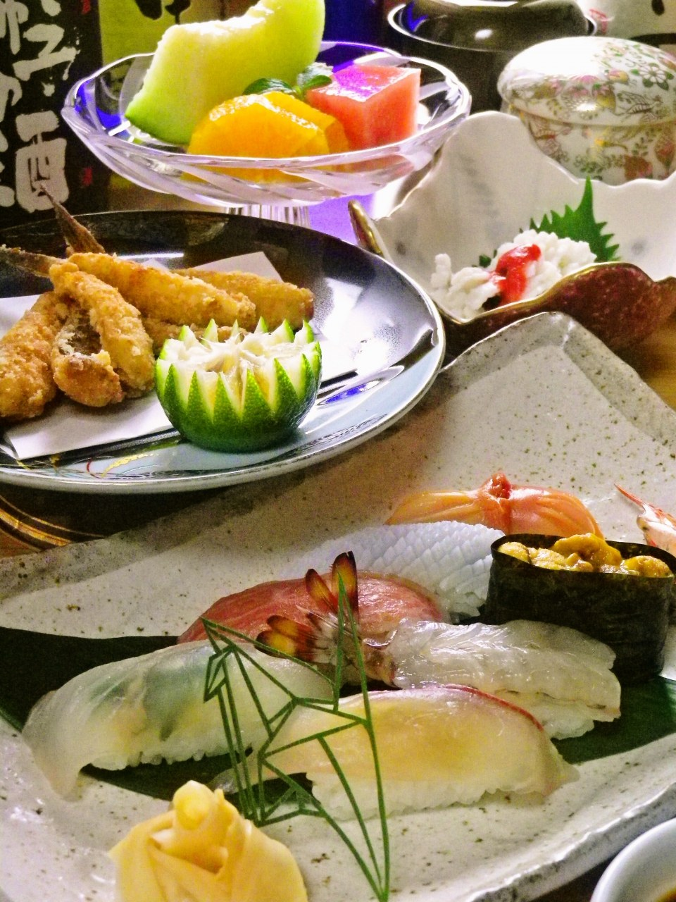
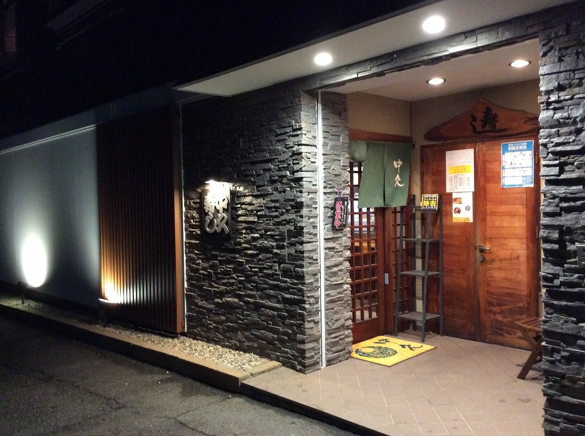
| 営業時間 | 火〜日・祝日・祝前日 17:00〜22:00（料理L.O. 21:30／ドリンクL.O. 21:30）※昼の利用は前日までに要予約 |
|---|---|
| 定休日 | 月曜（月曜が祝日の場合は営業し翌日休み。変則的に休むことがあるので要確認） |
| 住所 | 山口県下関市幡生町1丁目4-23 |
| 予約 | 可（電話、またはホットペッパーグルメのネット予約） — ☎ 083-252-2740 |
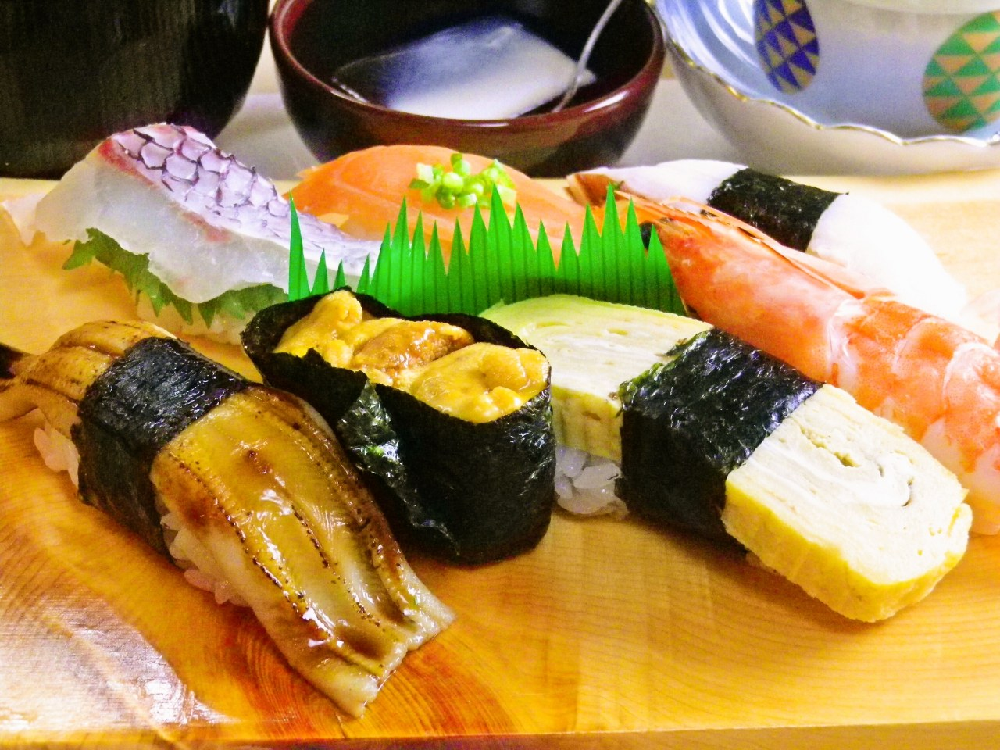
| 営業時間 | 朝、準備ができ次第〜14:30（公式サイトの記載）。ホットペッパーグルメでは月〜水・金〜日・祝日・祝前日 10:00〜15:00（料理L.O. 14:30）と表記されており、開始時刻の記載が媒体で食い違う |
|---|---|
| 定休日 | 木曜（公式サイトは「木曜日と月1〜2回の不定休」） |
| 住所 | 山口県下関市唐戸町5-2 関門ビル1F |
| 予約 | 電話で相談（ネット予約は不可。出前は電話またはフリーダイヤル0120-394-418） — ☎ 083-231-8105 ／ 公式サイト |
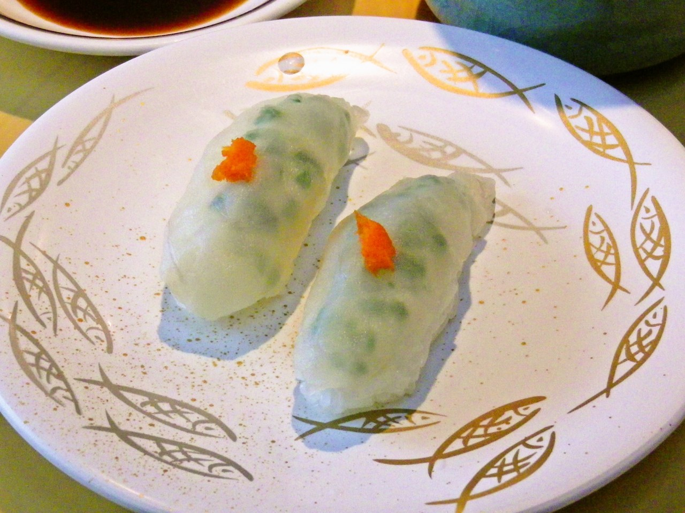
| 営業時間 | 11:00〜15:00（料理L.O. 14:30／ドリンクL.O. 14:30） |
|---|---|
| 定休日 | 不定休（月に1〜2日。公式サイトで確認） |
| 住所 | 山口県下関市唐戸町5-50 唐戸市場2階 |
| 予約 | 不可（席は先着順） — ☎ 083-233-2611 ／ 公式サイト |
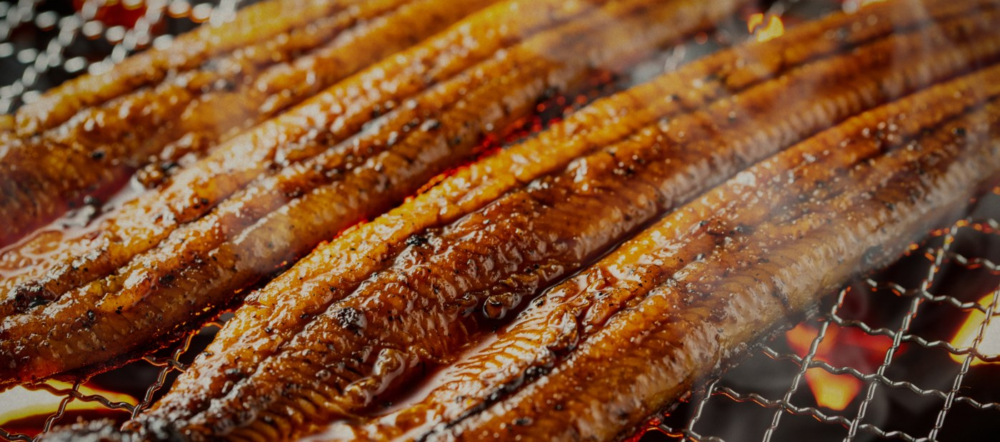
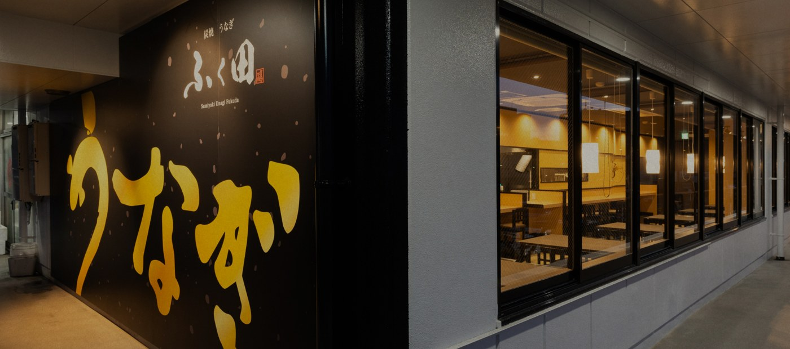
| 営業時間 | 11:00〜15:00（L.O. 14:00）／17:00〜21:00（L.O. 20:00） |
|---|---|
| 定休日 | 不定休 |
| 住所 | 山口県下関市唐戸町6-1 カモンワーフ2階 |
| 予約 | 可（電話、またはウェブ予約 https://app.tablerequest.jp/shops/7f7b46e2f650a8b5 。持ち帰りの予約も可。時期により予約を受けないことがある） — ☎ 083-227-2917 ／ 公式サイト |
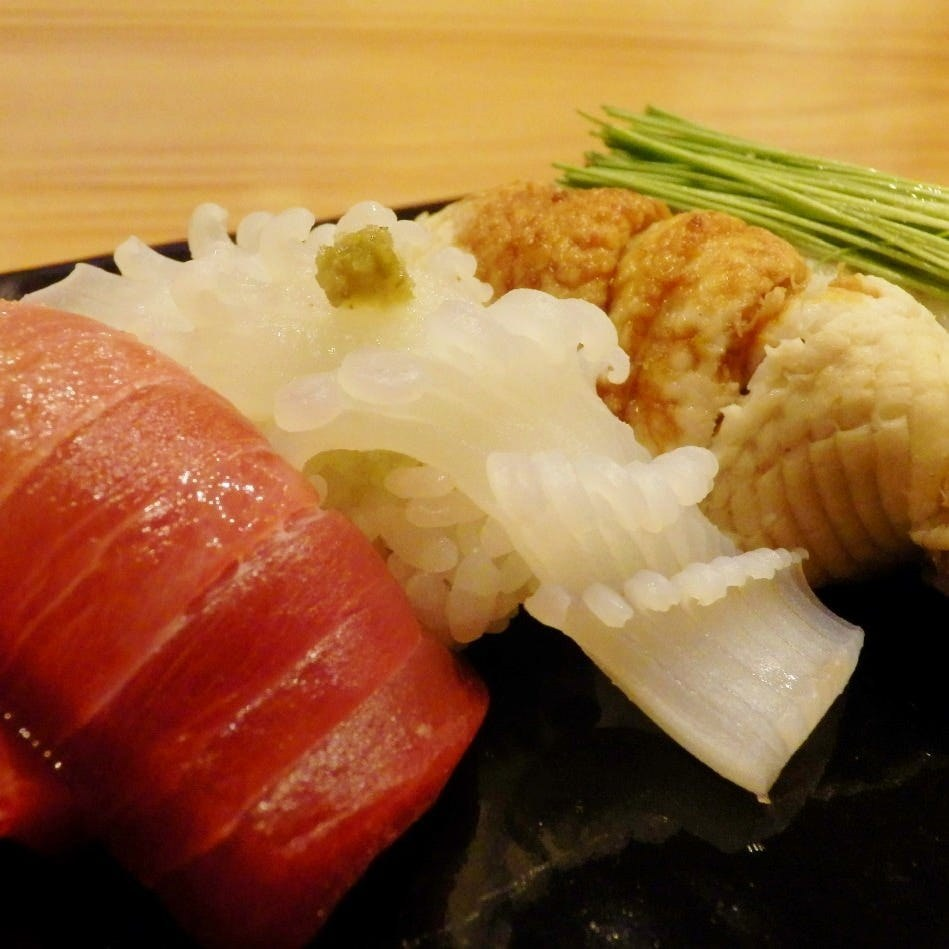
| 営業時間 | 18:00〜翌1:00（楽天ぐるなびの記載。仕入れの状況により早く閉めることがある）※ヒトサラは12:00〜14:00と18:00〜深夜と表記しており、昼の営業の有無は媒体で食い違う |
|---|---|
| 定休日 | 日曜（楽天ぐるなびは「不定休日あり」とも記載） |
| 住所 | 山口県下関市細江町1-3-27 |
| 予約 | 可（電話、または楽天ぐるなびのネット予約） — ☎ 083-227-4605 ／ 公式サイト |
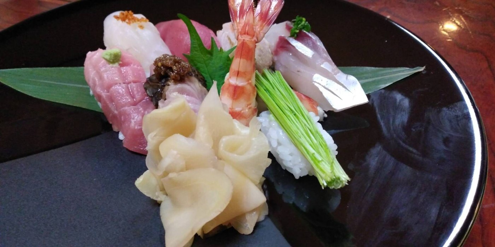
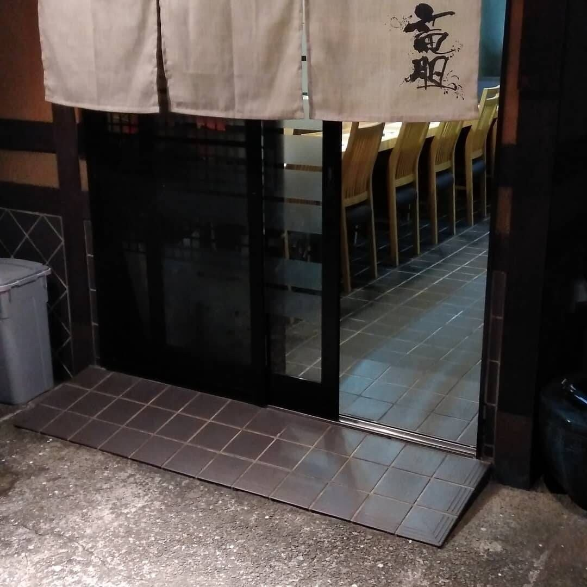
| 営業時間 | 18:00〜（公式サイト。閉店時間は問い合わせ。公式インスタグラムは「18:00〜24:00位まで」、昼は予約があれば開けるとしている） |
|---|---|
| 定休日 | 日曜（公式インスタグラムは「日曜日、予約の無い祝日」としている） |
| 住所 | 山口県下関市豊前田町2丁目1-8 |
| 予約 | 可（電話。まず電話で問い合わせるよう公式が案内している） — ☎ 083-242-0100 ／ 公式サイト |
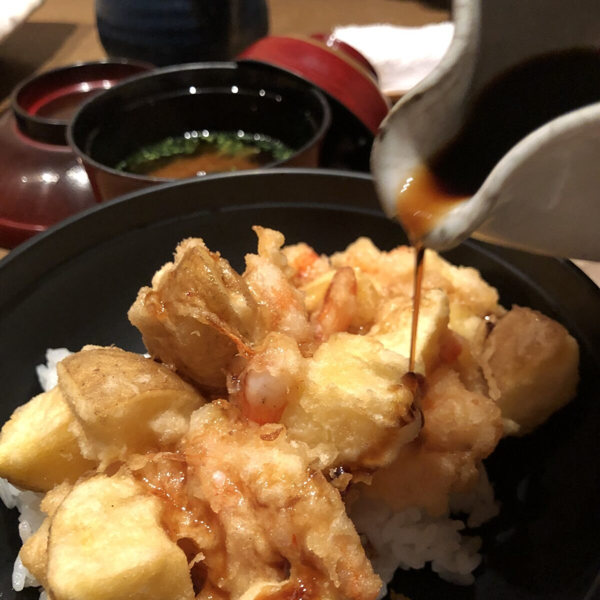
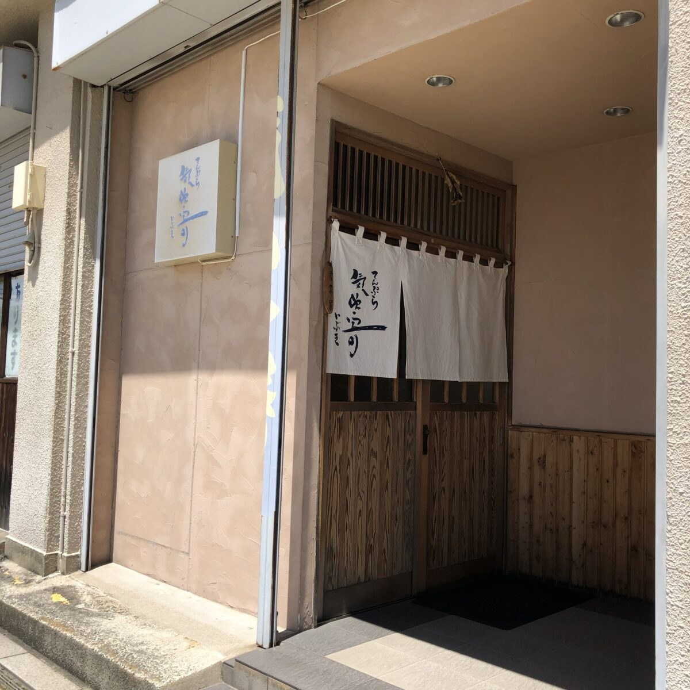
| 営業時間 | 火〜日 11:30〜14:00（L.O. 13:30）／17:30〜21:00（L.O. 20:30） |
|---|---|
| 定休日 | 月曜・祝日（祝日の翌日も休み） |
| 住所 | 山口県下関市岬之町11-18 |
| 予約 | 可（電話 083-231-8866、または公式サイトのネット予約） — ☎ 083-231-8866 ／ 公式サイト |
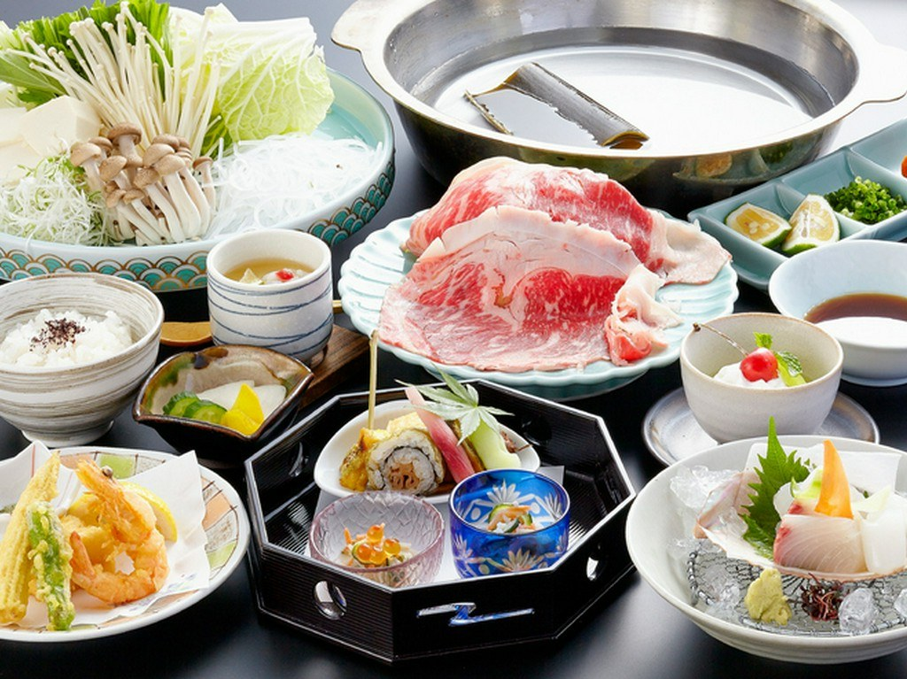
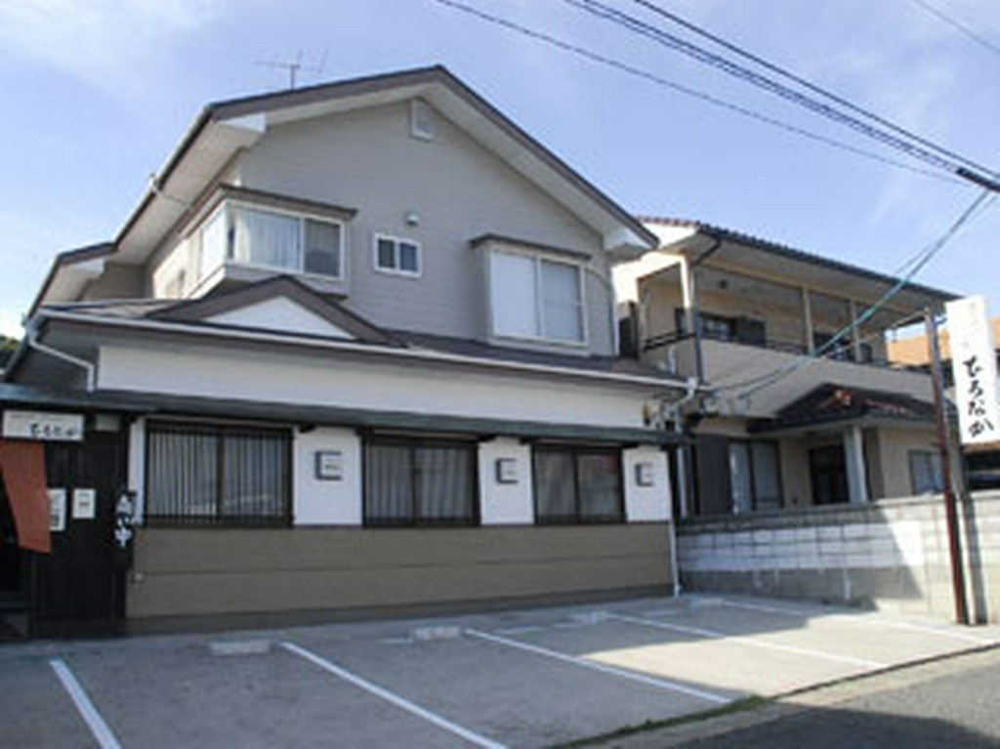
| 営業時間 | 月・水・金〜日・祝・祝前 昼 12:00〜14:00（L.O. 13:30）／夜 17:30〜21:00（L.O. 20:30）※昼夜とも3日前までの完全予約制 |
|---|---|
| 定休日 | 火曜・木曜（ほかに月に数日休むことがある） |
| 住所 | 山口県下関市長府才川2-4-15 |
| 予約 | 要予約（3日前まで。電話 083-248-5635、またはヒトサラのネット予約） — ☎ 083-248-5635 |
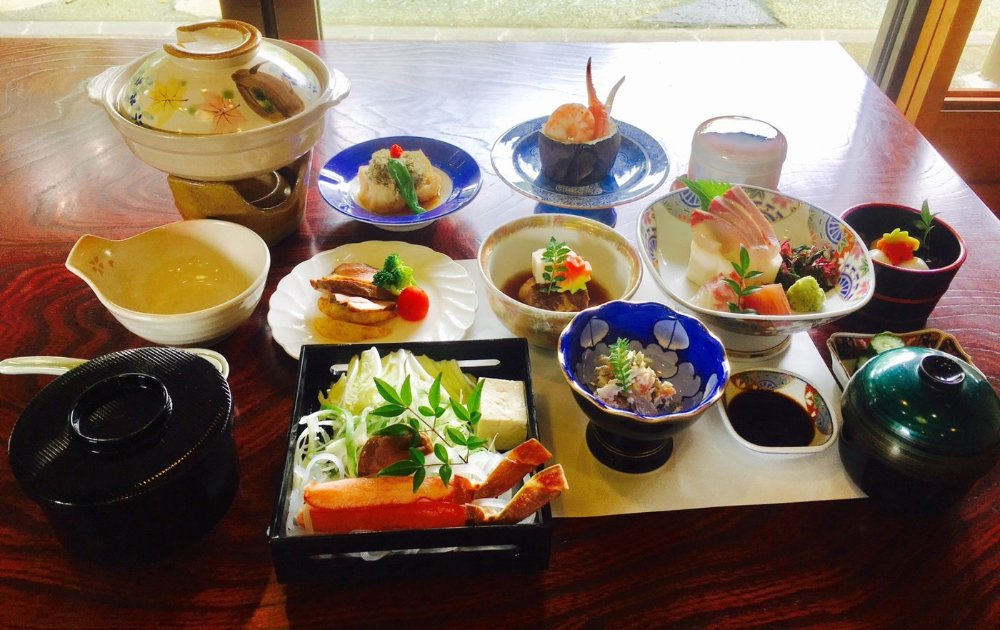
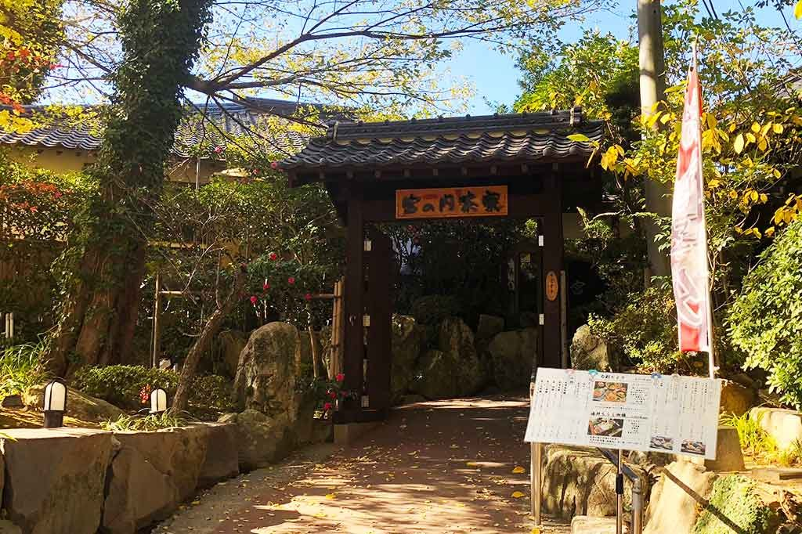
| 営業時間 | 11:00〜15:00（オーダーストップ14:00）／17:00〜21:00（オーダーストップ20:00）※19:00以降は要問い合わせ |
|---|---|
| 定休日 | 不定休（公式サイトの店舗情報ページに月ごとの休業日が出る） |
| 住所 | 山口県下関市長府宮の内町1-18 |
| 予約 | 可（電話 083-245-5500。平日の夜は前日まで、会席は2日前までに要予約。土日の夜は予約なしでも可） — ☎ 083-245-5500 ／ 公式サイト |
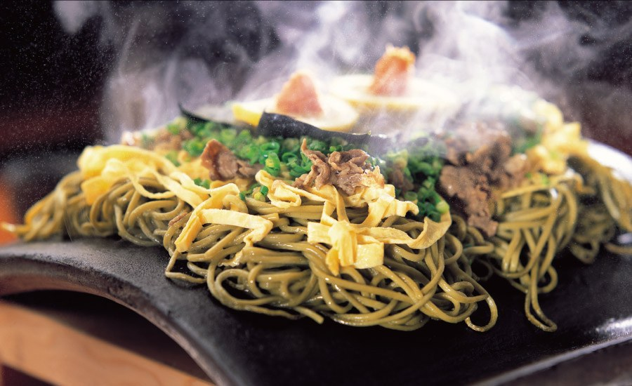
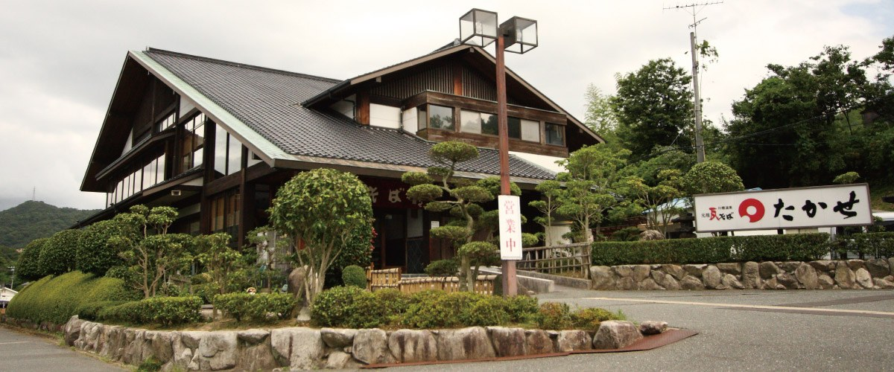
| 営業時間 | 【川棚南本館】月〜金 11:00〜15:00（最終受付14:30）／土・日 11:00〜20:00（最終受付19:30） 【川棚本館】土・日・祝のみ営業 11:00〜15:00 ※下関観光コンベンション協会の特集ページは南本館を「11:00〜20:00（L.O.19:30）」と記載しており、公式サイトの記載と食い違う。訪問前に電話で確認のこと |
|---|---|
| 定休日 | 【川棚南本館】不定休（公式サイト） 【川棚本館】平日（土・日・祝のみ営業） ※下関観光コンベンション協会の特集ページは南本館を「毎週木・金曜（祝日の場合は営業）」と記載 |
| 住所 | 山口県下関市豊浦町大字川棚5437 |
| 予約 | 会席・セットメニューは3日前までの要予約（2名から）。瓦そば単品は予約不要。お盆などの繁忙期は予約を受け付けず当日受付のみ。電話受付 9:00〜17:00 — ☎ 083-772-2680 ／ 公式サイト |
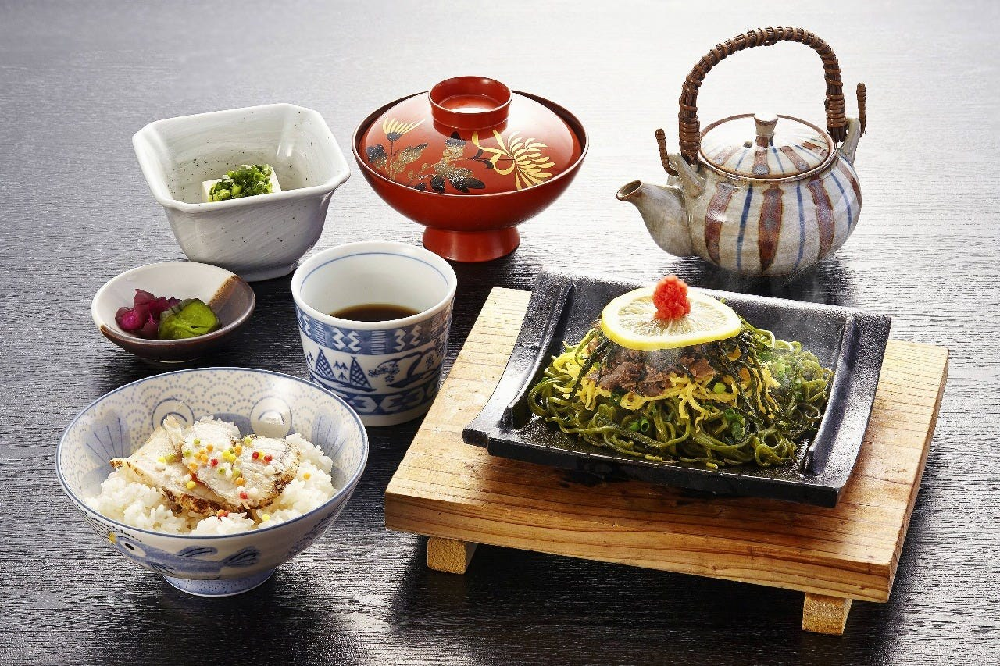
| 営業時間 | 10:30〜15:00（月〜金）／10:30〜16:00（土・日・祝） ※店の公式ページ（楽天ぐるなび提供）は「10:50〜」と記載 |
|---|---|
| 定休日 | 年中無休 |
| 住所 | 山口県下関市唐戸町6-1 カモンワーフ2階 |
| 予約 | 未確認（カモンワーフ公式・店舗公式ページとも予約の案内なし。団体はカモンワーフ事務局 083-228-0330 へ） — ☎ 083-222-0890 ／ 公式サイト |
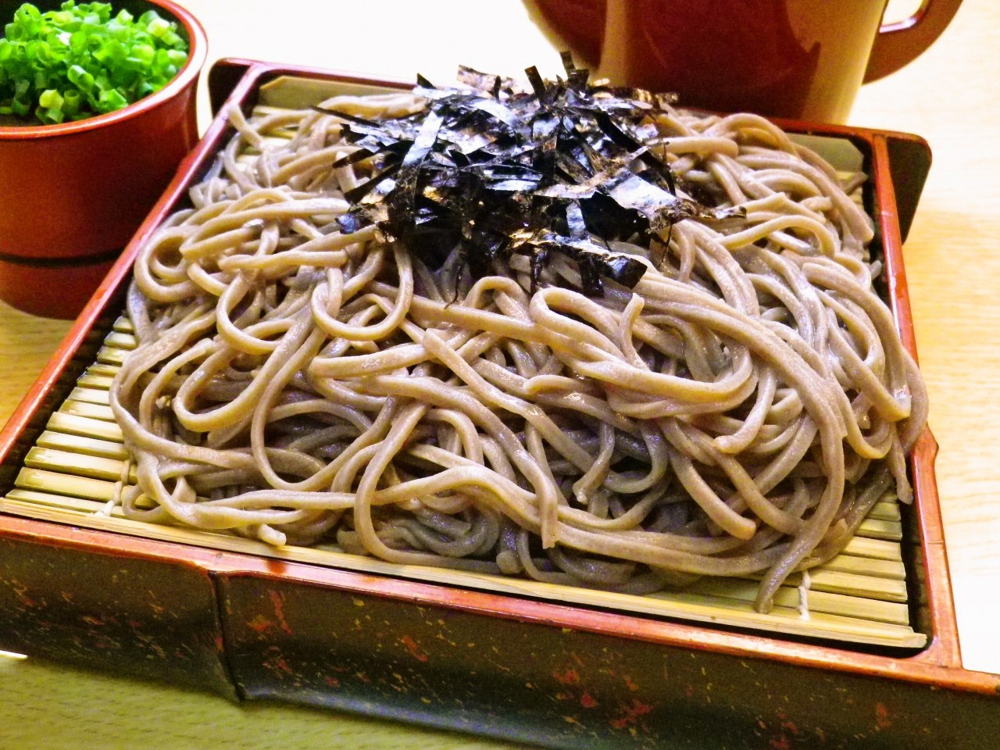
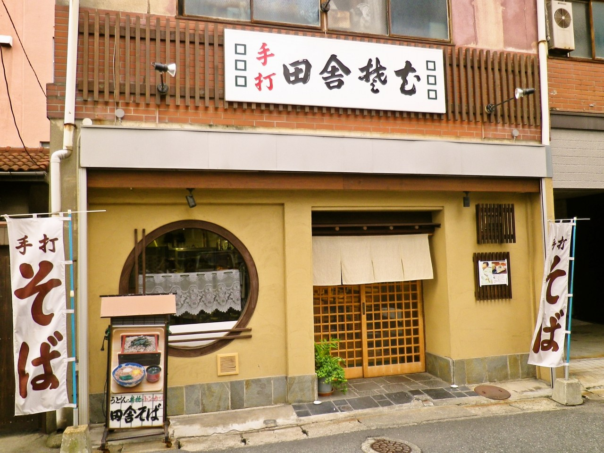
| 営業時間 | 月〜土 11:00〜15:00／17:30〜21:00（料理L.O. 20:30・ドリンクL.O. 20:30） 祝日 11:00〜15:00 ※売り切れ次第終了 |
|---|---|
| 定休日 | 日曜日 |
| 住所 | 山口県下関市赤間町2-10 |
| 予約 | 未確認（ホットペッパーグルメはネット予約を受け付けていない。20席のみで行列ができるため、昼は時間をずらすとよい） — ☎ 083-232-0712 |
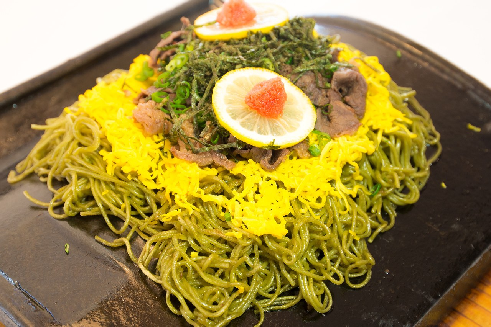
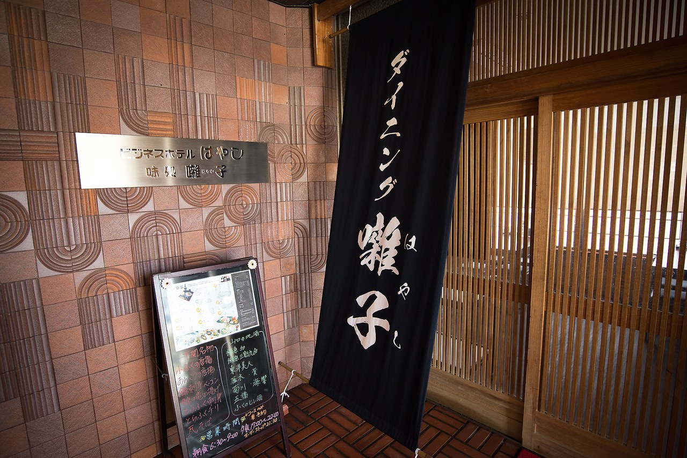
| 営業時間 | 17:00〜21:00（L.O. 20:30） 朝食 6:30〜9:00（L.O. 8:30） ※ホットペッパーグルメは「15:00〜22:00（料理L.O. 21:30）」と記載しており、公式サイトの記載と食い違う |
|---|---|
| 定休日 | 夕食は日曜日休み（朝食は年中無休） |
| 住所 | 山口県下関市秋根南町1-8-13（ビジネスホテルはやし1階） |
| 予約 | 未確認（ホットペッパーグルメはネット予約を受け付けていない。宴会・会議室の利用はホテル代表 083-256-3888 へ） — 公式サイト |
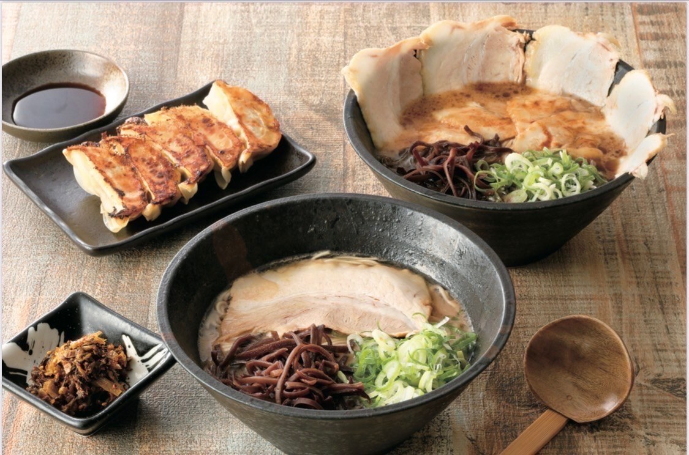
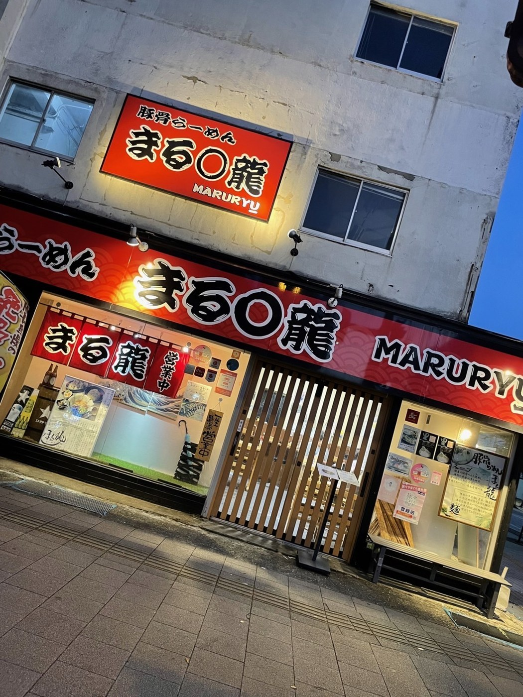
| 営業時間 | 11:30〜15:00／18:00〜23:00 ※媒体により「日〜木は翌1:00まで、金・土は翌2:00まで」「18:00〜24:00」の記載もある |
|---|---|
| 定休日 | 火曜日（公式Instagramは「火曜日の夜」と記載） |
| 住所 | 山口県下関市豊前田町3-2-7 下関第1ビル1階 |
| 予約 | 予約不可（席数が少なく、夜は混み合う） — ☎ 083-242-2206 ／ 公式サイト |
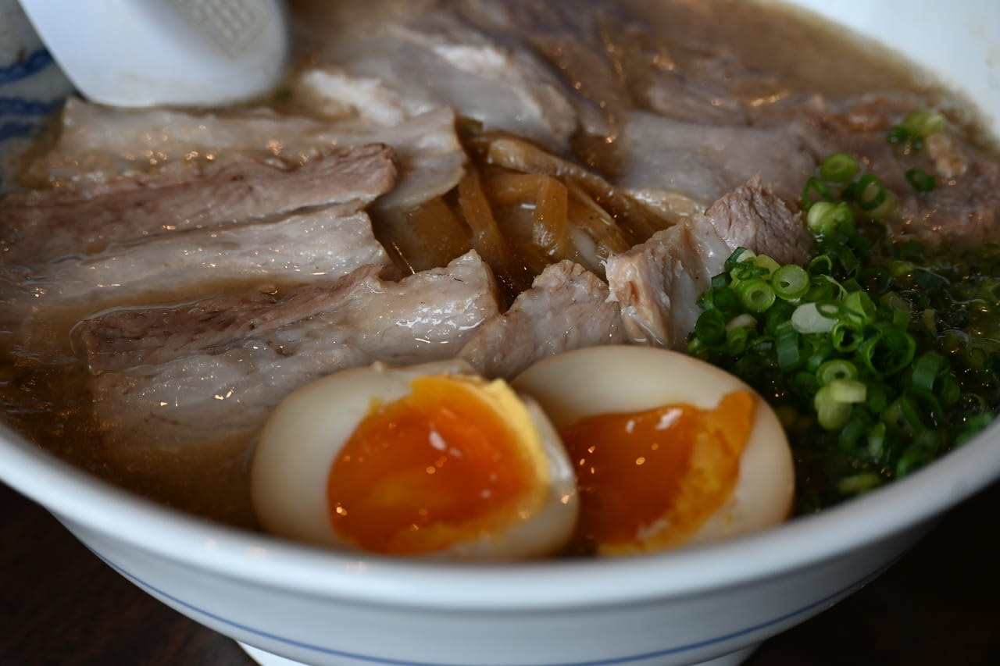
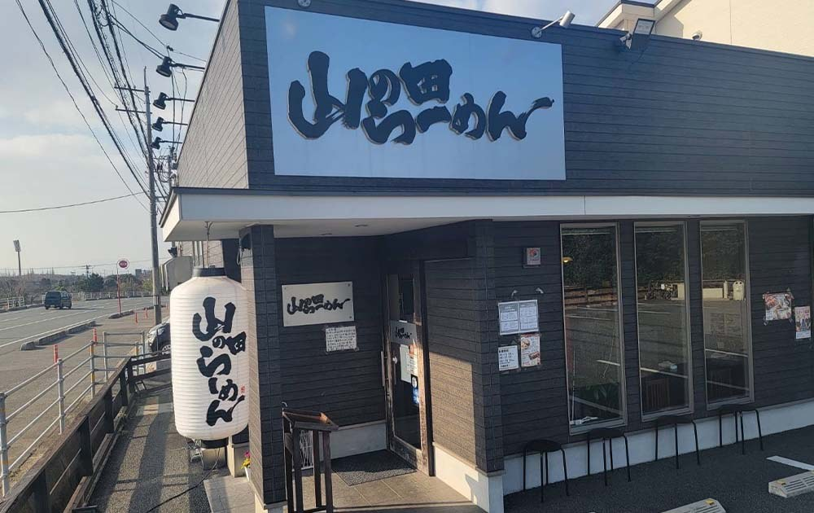
| 営業時間 | 11:00〜15:00／17:00〜21:00 ※火曜日は 11:00〜14:30 のみ営業 |
|---|---|
| 定休日 | 水曜日 |
| 住所 | 山口県下関市大字蒲生野805-7 |
| 予約 | 不可（席のみの店。支払いは現金とPayPay） — ☎ 083-249-5791 ／ 公式サイト |
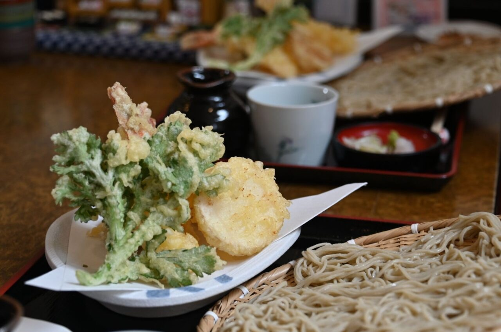
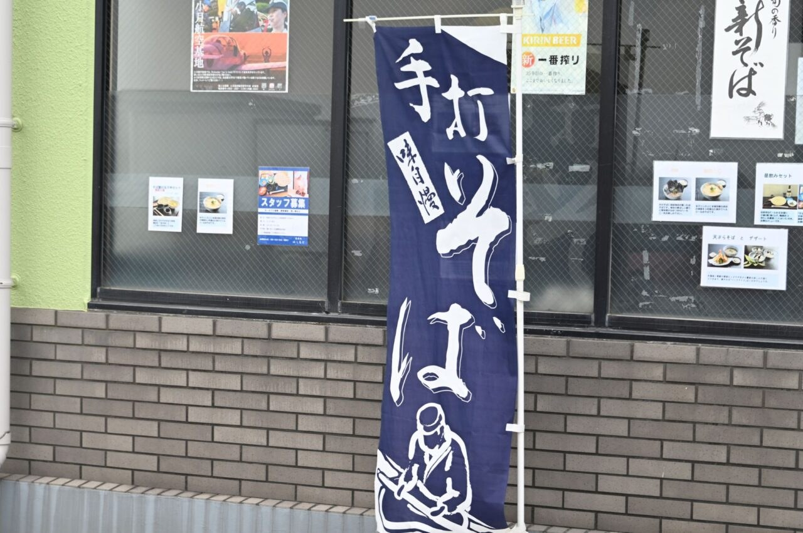
| 営業時間 | 平日 11:30〜13:45（L.O. 13:30）／土・日・祝 11:30〜14:00（L.O. 13:45） 昼のみの営業・売り切れ次第終了 |
|---|---|
| 定休日 | 毎週火曜日・第3および第5月曜日（日曜日は不定休のため電話で確認のこと） |
| 住所 | 山口県下関市長府土居の内町7-16 |
| 予約 | 可（電話予約。売り切れ次第終了のため、確実に食べたい場合は事前に電話しておくとよい） — ☎ 050-8883-0628 ／ 公式サイト |
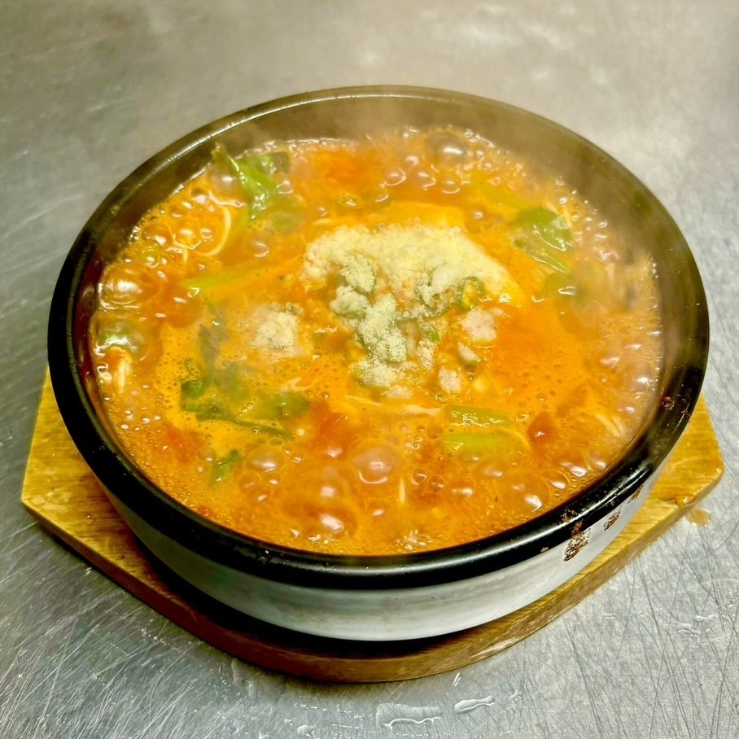
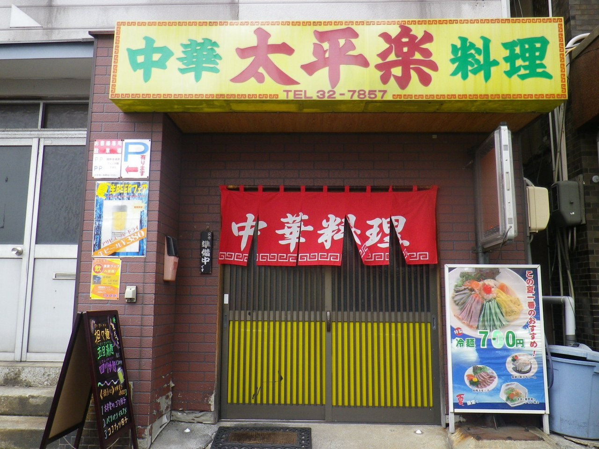
| 営業時間 | 月〜土 11:00〜14:00／17:30〜21:00 ※食べログ等には「11:30〜15:00／17:00〜22:00」の記載もある |
|---|---|
| 定休日 | 日曜日（お盆と正月は休み。ほかに臨時休業あり） |
| 住所 | 山口県下関市岬之町16-11 |
| 予約 | 可（電話・ホットペッパーグルメのネット予約とも可。即予約は来店日の前日17時まで、リクエスト予約は3日前まで。貸切は20〜25名で応相談） — ☎ 083-232-7857 |
| 営業時間 | 月〜木 11:00〜23:00（料理L.O. 22:00／ドリンクL.O. 22:30）／金・土 11:00〜23:30（料理L.O. 22:30／ドリンクL.O. 22:45） |
|---|---|
| 定休日 | 日曜（定休日が祝日にあたる場合は営業）・12月31日・1月1日 |
| 住所 | 山口県下関市豊前田町2-1-22 国宝ビルNo.2 1F |
| 予約 | 可（ホットペッパーグルメのネット予約で即予約可。電話も可） — ☎ 083-234-0385 |
| 営業時間 | 18:00〜23:00（料理L.O. 23:00／ドリンクL.O. 23:00） |
|---|---|
| 定休日 | 不定休（公式インスタグラムで告知） |
| 住所 | 山口県下関市細江町1-3-31 |
| 予約 | 可（ホットペッパーグルメのネット予約で即予約可。電話も可） — ☎ 083-232-7027 |
| 営業時間 | 昼 11:30〜14:00／夜 17:00〜翌0:00（祝日は17:00〜23:00、料理L.O. 22:30・ドリンクL.O. 23:00）※しものせきナイトウォーカーは夜の終わりを24:00（L.O.23:30）と記載 |
|---|---|
| 定休日 | 日曜（月曜が祝日の場合は日曜営業・月曜定休） |
| 住所 | 山口県下関市細江町1-5-6 |
| 予約 | 可（電話） — ☎ 083-232-4781 |
| 営業時間 | 17:30〜23:00（料理L.O. 22:30） |
|---|---|
| 定休日 | 日曜（日曜が祝日の場合は月曜定休、月曜が祝日の場合は日曜営業） |
| 住所 | 山口県下関市岬之町9-15 |
| 予約 | 可（電話） — ☎ 083-222-3868 |
| 営業時間 | 月〜土 17:00〜24:30（L.O. 24:00）／日・祝 17:00〜24:00（L.O. 23:30）※かんもんノートの記事は「17:00〜24:00（L.O. 23:30）」と記載しており、媒体で食い違う |
|---|---|
| 定休日 | なし（しものせきナイトウォーカー）※かんもんノートの記事は「不定休」と記載 |
| 住所 | 山口県下関市赤間町1-2 |
| 予約 | 可（電話。宴会予約も受け付け） — ☎ 083-231-3241 |
| 営業時間 | 11:30〜14:00（料理L.O. 13:30／ドリンクL.O. 13:30）／17:00〜23:00（料理L.O. 22:30／ドリンクL.O. 22:30） |
|---|---|
| 定休日 | 日曜・祝日（宴会の予約のみ定休日でも対応可） |
| 住所 | 山口県下関市南部町3-16 |
| 予約 | 可（電話） — ☎ 083-222-5007 |
| 営業時間 | 17:30〜23:00（料理L.O. 22:30／ドリンクL.O. 22:30）※仕入れが尽きると早じまいすることがある |
|---|---|
| 定休日 | 水曜（12月は水曜も宴会予約を受け付け・電話のみ） |
| 住所 | 山口県下関市長府金屋町2-17 |
| 予約 | 可（電話） — ☎ 083-245-5656 |
| 営業時間 | 17:00〜23:00 |
|---|---|
| 定休日 | 日曜 |
| 住所 | 山口県下関市綾羅木本町1-15-30 FTビル1F |
| 予約 | 可（電話） — ☎ 083-294-5231 |
| 営業時間 | 【ランチ】12:00 一斉スタート（土・日のみ。貸切の場合は要相談。14:30頃コース終了予定） 【ディナー】19:00 一斉スタート（21:30頃コース終了予定） ※コースは一斉スタートのため10分前までに来店のこと |
|---|---|
| 定休日 | 不定休（Japan Brand Collection 2026年8月22日更新） ※Yahoo!検索の店舗情報欄は「水曜日」と表示しており食い違う。訪問前に電話で確認のこと |
| 住所 | 山口県下関市岬之町13-7 |
| 予約 | 完全予約制（コースのみ）。電話 083-234-2299、またはメール info@restaurant-takatsu.com。1名から利用可。苦手な食材・アレルギーは予約時に申し出る — ☎ 083-234-2299 ／ 公式サイト |
| 営業時間 | 11:00〜15:00（L.O.14:00）／17:30〜22:00（L.O.21:00） ※閉店時刻の都合で、昼は13:15〜13:30頃、夜は20:15〜20:30頃に受付を終了することがあると公式Instagram・公式Facebookが告知している。20時以降に行く場合は電話で確認を |
|---|---|
| 定休日 | 木曜日（祝日の場合は営業） |
| 住所 | 山口県下関市みもすそ川町10-17 |
| 予約 | 電話 083-232-7091 で受付（公式サイトに「ホームページを見た」と伝えるとスムーズ、と記載）。貸切は不可 — ☎ 083-232-7091 ／ 公式サイト |
| 営業時間 | 昼の部 11:00〜15:00（L.O.14:30）／夜の部 18:00〜21:30（L.O.21:00） ※品物が無くなり次第閉店。公式Instagramは「水・土・祝祭日は昼の部のみ営業、昼 11:00〜14:30／夜 17:30〜21:30」と記載しており公式サイトと食い違う。営業日は公式サイトの月間カレンダーで確認のこと |
|---|---|
| 定休日 | 日曜・月曜（日曜は貸切予約のみ受付）。臨時休業あり |
| 住所 | 山口県下関市幡生宮の下町26-8 |
| 予約 | 貸切パーティーは要予約（電話 083-254-3120）。弁当・惣菜・オードブルも電話で注文可。通常の席の予約可否は未確認 — ☎ 083-254-3120 ／ 公式サイト |
| 営業時間 | 火〜日・祝日・祝前日 11:00〜14:30（料理L.O.14:00／ドリンクL.O.14:00）／18:00〜22:00（料理L.O.21:00／ドリンクL.O.21:30） ※第三者のInstagram投稿（2026年10月6日）は夜を「17:30〜22:00」と記載しており、ホットペッパーグルメの記載と食い違う |
|---|---|
| 定休日 | 月曜・第3火曜（祝日の場合は翌営業日。ホットペッパーグルメ） ※Instagramの紹介投稿は「定休日 月曜日」とだけ記載しており食い違う |
| 住所 | 山口県下関市中之町8-20 |
| 予約 | 電話で受付（ホットペッパーグルメのネット予約は現在停止中）。プライベートルームはランチコースかフルコースの利用者のみ。40名以上は貸切の相談可 — ☎ 083-231-1016 ／ 公式サイト |
| 営業時間 | 月〜土・祝日・祝前日 18:00〜22:00（料理L.O.20:00／ドリンクL.O.21:30） |
|---|---|
| 定休日 | 日曜・不定休 |
| 住所 | 山口県下関市細江町1-4-18 ハーアインビル201 |
| 予約 | 要予約（1名から可）。ホットペッパーグルメのネット予約は即予約が来店日当日15時まで、リクエスト予約が前日17時まで受付。電話はホットペッパーグルメ掲載の 050-8888-2132。子ども連れ不可 |
| 営業時間 | 火〜木 17:00〜22:30（料理・ドリンクL.O.22:00）／金〜日 11:30〜14:30（L.O.14:00）および 17:00〜22:30（L.O.22:00） ※営業時間・定休日は変更されることがあるため、来店前に店へ確認のこと |
|---|---|
| 定休日 | 月曜 |
| 住所 | 山口県下関市豊前田町3丁目2番7 下関第一ビル |
| 予約 | ホットペッパーグルメのネット予約可（即予約は来店日当日21時まで、リクエスト予約は前日17時まで）。電話はホットペッパーグルメ掲載の 050-8892-8336。貸切は不可 |
| 営業時間 | 12:00〜14:30（L.O.14:00）／18:00〜22:30（L.O.21:30）＝公式Instagramの記載 ※ホットペッパーグルメ（2020年1月7日更新）は「11:30〜14:30／17:00〜22:00」と記載しており食い違う |
|---|---|
| 定休日 | 月曜（祝日の場合も休み）。ほか臨時休業あり |
| 住所 | 山口県下関市竹崎町2-11-12 |
| 予約 | 電話 083-235-5556 で受付（宴会は飲み放題付きコースで25名まで）。ネット予約は無し — ☎ 083-235-5556 |
| 営業時間 | 【昼】11:30〜14:30 【夜】18:00〜22:00 ※金曜・土曜はランチ休みでディナーのみ。昼夜とも予約優先 |
|---|---|
| 定休日 | 火曜 |
| 住所 | 山口県下関市長府安養寺1-2-23 チェリーブロッサム1F |
| 予約 | 電話 080-9280-3309 で受付（公式Instagramのダイレクトメッセージは3日前まで）。昼夜とも予約優先。10名から貸切可、最大30名まで宴会可。当日と前日14時半以降のキャンセルはキャンセル料が発生する — ☎ 080-9280-3309 ／ 公式サイト |
| 営業時間 | 平日 8:30〜17:00（オーダーストップ16:00）／土日 8:00〜17:00（オーダーストップ16:00） |
|---|---|
| 定休日 | 年中無休（臨時休業あり） |
| 住所 | 山口県下関市長府黒門町4-7 |
| 予約 | 不可（予約は受け付けず来店順。土日のモーニングは1時間ほど待つことがある） — ☎ 083-245-0585 |
| 営業時間 | 11:00〜19:00（18:00 L.O.）※公式インスタグラムのプロフィールは「11時〜18時（3月まで冬時間）」と記載しており、取材記事の表記と差がある。訪問前に確認を |
|---|---|
| 定休日 | 水曜・第2火曜（月により変わるため公式インスタグラムの月初の告知を確認） |
| 住所 | 山口県下関市阿彌陀寺町1-6 1階 |
| 予約 | 席の予約は不可。日替わりプラス（2名以上）と弁当・オードブルは要予約（弁当は1週間前が望ましく、3日前まで受付） — ☎ 083-237-9254 ／ 公式サイト |
| 営業時間 | 10:00〜18:00（L.O. 17:30） |
|---|---|
| 定休日 | 不定休（公式インスタグラムで告知） |
| 住所 | 山口県下関市南部町26-15 1F |
| 予約 | 未確認（席の予約についての記載は見当たらない） — 公式サイト |
| 営業時間 | 12:00〜17:00（公式サイト記載） |
|---|---|
| 定休日 | 火曜・水曜 |
| 住所 | 山口県下関市南部町2-5（松琴堂内） |
| 予約 | 予約優先（1日5組限定・電話070-3796-2834）。和菓子作り体験と茶道体験は前営業日までの要予約で1席6名まで。飛び込みも可だが相席になる場合あり — ☎ 070-3796-2834 ／ 公式サイト |
| 営業時間 | 平日 11:00〜18:00／土曜 14:00〜18:00 |
|---|---|
| 定休日 | 水曜・日曜＋不定休（月ごとに変わるため公式インスタグラムのカレンダーを確認） |
| 住所 | 山口県下関市細江町2丁目2-10 和田ビル1階 |
| 予約 | 席の予約は不可。ドーナツとコーヒー豆の取り置きは可 — ☎ 050-5329-7699 ／ 公式サイト |
| 営業時間 | 11:00〜16:00ごろ（曜日により変動。その日の閉店時刻は公式インスタグラムのストーリーで告知） |
|---|---|
| 定休日 | 不定休（公式インスタグラムで月ごとに告知。2026年10月は30日） |
| 住所 | 山口県下関市豊前田町3-2-7 1階 |
| 予約 | 不可（混雑時は待つことがある） — 公式サイト |
| 営業時間 | 10:00〜17:00 |
|---|---|
| 定休日 | 水曜 |
| 住所 | 山口県下関市長府侍町1-2-39 |
| 予約 | カフェの席の予約は不可。ギフトと珈琲豆の予約は電話で受付 — ☎ 083-242-0950 ／ 公式サイト |
| 営業時間 | 10:00〜18:00 |
|---|---|
| 定休日 | 水曜・木曜（祝日は営業） |
| 住所 | 山口県下関市大学町1丁目4-7 |
| 予約 | 未確認（席の予約についての記載は見当たらない） — ☎ 083-253-6005 ／ 公式サイト |
本ガイドは個人利用目的で作成。掲載情報は2026年10月時点の調査に基づく。写真出典: 各店の公式サイト・公式SNS、および地域情報サイト等の掲載写真（著作権は各サイト・各撮影者に帰属）。引用元は店ごとにカード内へ明記。